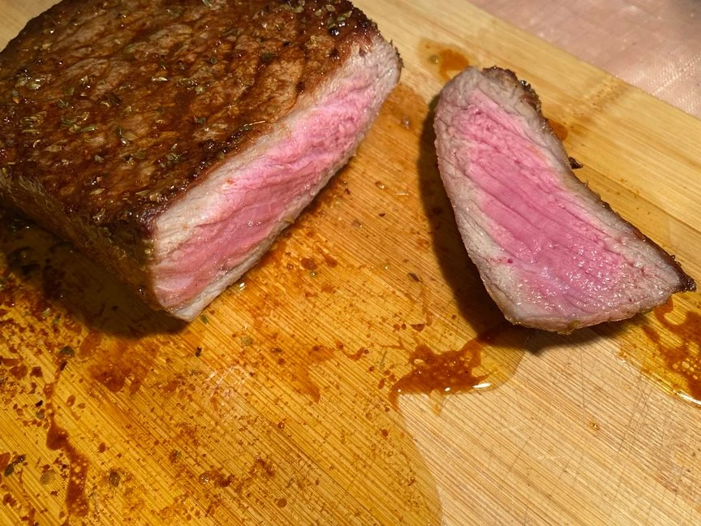

Perfect Steak

Description
There is only one day to cook a steak, That is medium rare.
If you don't pull that steak off the grill at about 130 degrees F to rest... you shouldn't
be allowed to cook steaks.
Ingredients
Steps
- take your steak out of the fridge 30 minutes prior to cooking
- evening and heavily coat your steak with salt and pepper on all sides
- heat a pan to medium
- place steak on the hot pan and flip every minute for the next 8 minutes
- Remove steak after 8 minutes or when desired temperature is reached
- Allow steak to rest for 10 minutes and then consume